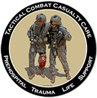
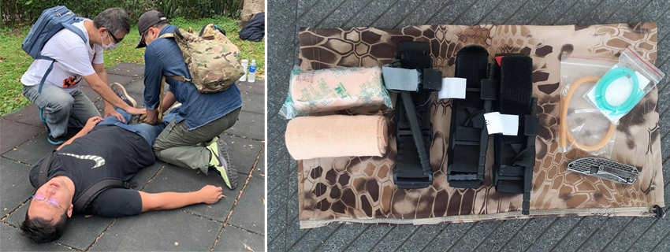

戰術戰鬥傷患救助 (Tactical Combat Casualty Care)
陳柏翰│產品十五處 \ 軟體十五部
| 我過去在部隊服役時，聽聞過也見過了不少類型傷勢，加上自己雙膝受傷，因此埋下了想要學習急救技能的種子，直到退伍前才知道「TCCC」，也就是所謂的戰術戰鬥傷患救助(Tactical Combat Casualty Care)的技能，比較常聽到的說法便是急救(First Aid)，但當時雙膝傷勢還沒有完全好，沒有馬上付諸實踐，這期間又遇到一連串的社會案件產生的人員傷亡，例如：香港雨傘革命、反送中抗爭以及鐵道警察等社會案件之後，才下定決心自費去學習這一項技能。 |  |
這項技能重點於如何在第一時間將傷者的出血控制住，也就是在最短的時間內完成「止血」，這一個看似簡單的動作，卻包含不少很重要的概念在裡面，例如：要怎麼判斷傷勢、要怎麼製作止血工具、要在哪個位置進行止血、要用什麼方法進行止血、在聯絡相關單位時要回報那些資訊等等。
|  |
這樣的急救技能不只有在戰場上會用到，其實平常也很容易派上用場，最常見的就是車禍現場，假設今天有人因為車禍導致左腳大量出血，需要先上前判斷出血位置及造成傷口的原因，接著使用腰帶當作急造止血帶，並在左大腿上方進行纏繞，透過壓迫血管來進行加壓止血，若有棒狀物則可以穿過腰帶後進行扭轉來加強止血力道，如果出血量還是偏多就需要在原先腰帶以上的位置再上一條止血帶。在電話連絡救護車時除了要告知事發地點之外，還要告知傷口位置、自己做的處置，好讓前來的救護人員可以快速接手處理。
或許有人會說這個不如EMT專業，不如學EMT就好，但這兩者的使用時機以及定位並不相同，TCCC屬於在第一時間要做處置，之後才會交手給EMT人員來進行後續處置，大多數情況前者都是相對較危險也比較複雜的環境，因此講究簡單、快速、有效，爭取保命的黃金時間，因為這種大量失血的狀況是每分鐘1000cc的速度在流失，而每個人大約僅有5000cc左右，若流失一半將會導致傷患休克，進而因失血過多死亡，也就是說要在兩分半以內做完緊急處置，確保救護車抵達前還有生命跡象。
附記：
TCCC 尚有包含氣胸狀況處置、環甲切（氣切）插管等內容，但因這些部分為「侵入式」的醫療行為， 所以這類技能需要具有EMT-2 以上的證書才能符合法規，僅止血技能屬於緊急應變，因此得以實施。